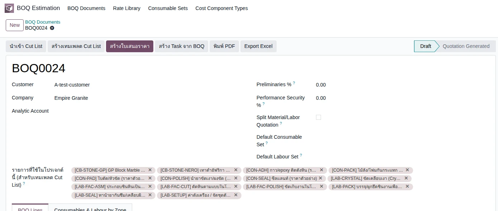
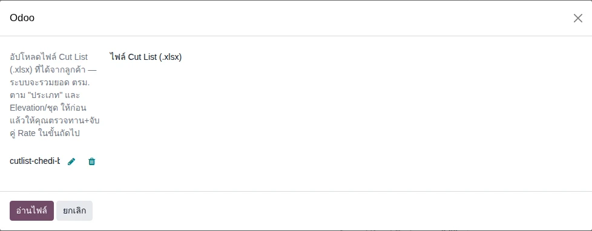
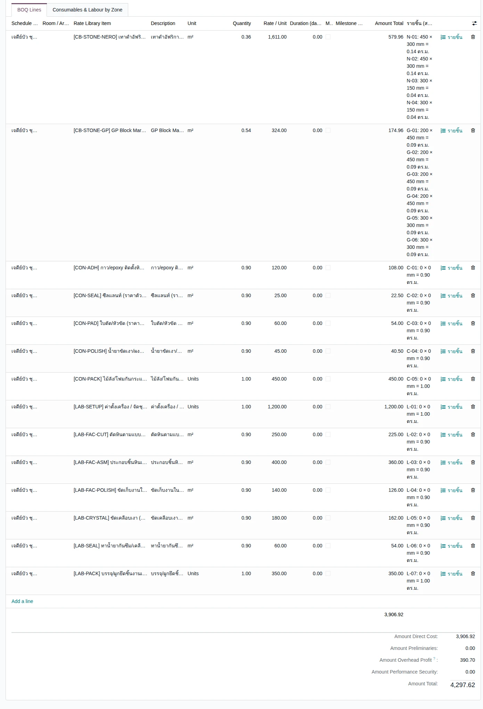
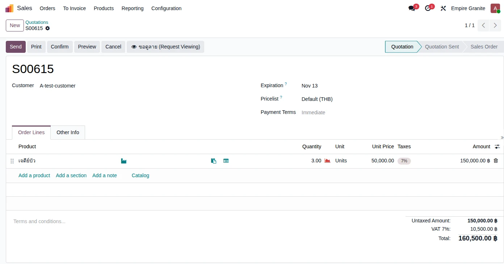
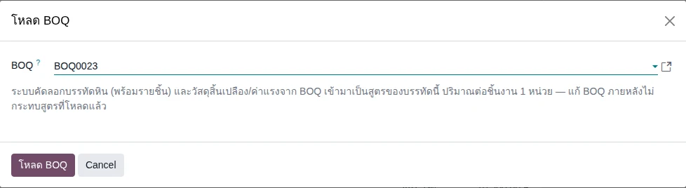
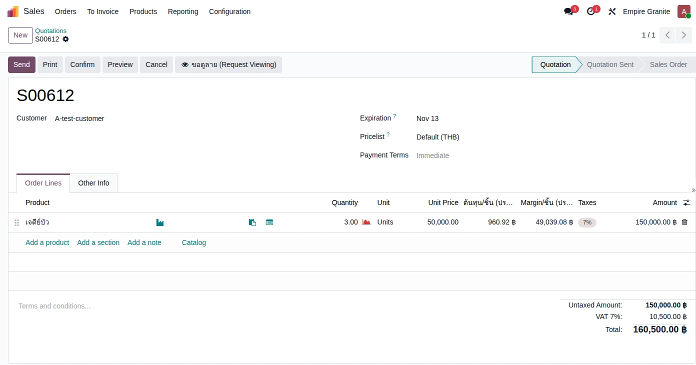
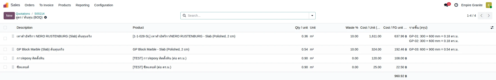
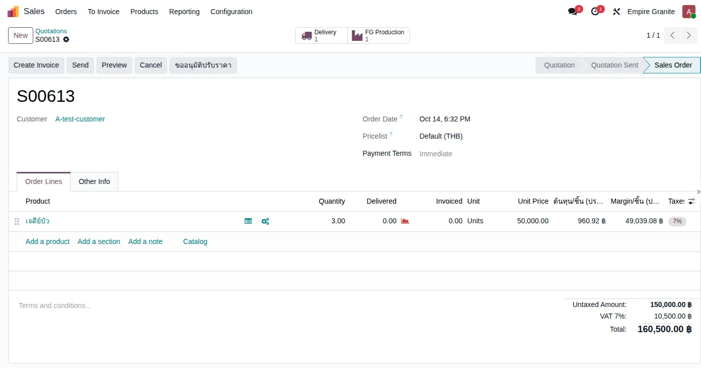

อัปเดตล่าสุด: 11 ตุลาคม 2569 (2026-10-11) · ระบบ stone_slab_inventory เวอร์ชัน 19.0.2.109.12 + boq_estimation 1.24.0 · ภาพหน้าจอทั้งหมดมาจากการทดลองใช้งานจริงบนระบบทดสอบ เมื่อ 11 ตุลาคม 2569 · หลังรอบทดลองนี้มีการแก้ระบบ 3 จุดบนระบบทดสอบ (ยังไม่ได้ commit และยังไม่ได้ขยับเลขเวอร์ชัน): ตัดแถว Slab ตามสูตรที่ไม่ได้ใช้ออกจาก Components, ใบส่งของ FG จอง Lot ของใบสั่งผลิตของบรรทัดนั้นก่อน, และเพิ่มปุ่ม "คัดลอกแผนเป็นขนาดจริง" ในใบตัดหิน — รันทดสอบซ้ำแล้ว ดู Golden Path ชุดใหม่ TC-GP-FGS-01 ถึง 18
บทนี้อธิบายเรื่อง FG (Finished Goods — สินค้าสำเร็จรูป) ว่าคืออะไร ทำไมระบบคิดแบบนี้ ไล่ทีละขั้นตั้งแต่ใบสั่งขาย ผลิตจาก Slab ส่งของ จนถึงใบแจ้งหนี้และต้นทุน FG มี 2 เส้นทาง คือ A. Countertop (ท็อปครัว ตัดจาก Slab ตามชิ้นที่สั่ง) และ B. Custom FG (งานสั่งทำพิเศษอย่างเจดีย์บัว ที่ประกอบจากหินหลายชนิด) ทุกภาพเป็นหน้าจอที่ทดลองใช้งานจริง ตัวเลขทุกตัวมาจากการทดลองรอบเดียวกัน อ่านคู่กับ บทที่ 31 Slab ซึ่งเป็นวัตถุดิบของ FG
1. FG คืออะไร
FG คือสินค้าที่ตัดและแปรรูปจาก Slab ตามแบบของลูกค้า ต่างจาก Slab ตรงที่ลูกค้าไม่ได้ซื้อ "แผ่น" แต่ซื้อ "ชิ้นงานตามที่สั่ง" และโรงงานต้องผลิตก่อนส่ง
| A. Countertop (FG มาตรฐาน) | B. Custom FG (เช่น เจดีย์บัว) | |
|---|---|---|
| ลูกค้าสั่งเป็น | ชิ้นงานหลายชิ้นขนาดต่างกัน + งานแปรรูป (ขอบ เจาะช่อง) | จำนวนชิ้นสำเร็จรูป (ตัวอย่าง 3 ชิ้น) ราคาตั้งไว้ที่สินค้า (50,000 ต่อชิ้น) |
| ซื้อขายเป็น | ตร.ม. ของพื้นที่ชิ้นงานรวม (3.48 ตร.ม. × 12,000) | ชิ้น |
| วัตถุดิบ | Slab ของวัสดุเดียว ระบบเลือกให้ | Slab หลายชนิด + วัสดุสิ้นเปลือง ตาม สูตร ที่โหลดจาก BOQ |
| ใบสั่งผลิต | 1 ใบ (FG Production) | หลายใบ: ใบตัดหิน (Cutting Plan) ต่อชนิดหิน + งานประกอบ (Assembly) |
| สิ่งที่ได้ | FG Lot ต่อชิ้น (ตามขนาด) + เศษหินเป็น Lot | Serial 1 เลขต่อ 1 ชิ้น (CB-00022 …) |
| ที่เก็บ | โซน EG01/Stock/Stone FG (แยกจากคลัง Slab) จนกว่าจะส่งของ | |
2. แนวคิดหลัก 7 ข้อ
- ใบสั่งขายบอกว่าจะผลิตอะไร A: รายการชิ้นงานบนบรรทัดสินค้า (กว้าง × ยาว) จำนวนในใบขายคือพื้นที่รวมที่ระบบรวมให้เอง B: จำนวนชิ้น และสูตรที่โหลดจาก BOQ
- งานแปรรูป (A) กลายเป็นบรรทัดบริการให้เอง งานขอบคิดเป็นเมตร งานเจาะ/ตัดช่องคิดเป็นจุด ระบบคำนวณความยาวขอบจากด้านที่ติ๊ก
- Confirm ใบสั่งขายแล้วระบบสร้างใบสั่งผลิตฉบับร่างให้เอง ไม่ต้องไปสร้างเอง ถ้าหินในสต็อกไม่พอ ใบสั่งผลิตยังสร้างได้แต่ค้างเป็นฉบับร่างพร้อมเตือน (ไม่บล็อก Confirm)
- วัตถุดิบคือ Slab Lot (Serial) ระบบเลือกแผ่นให้ครบพื้นที่รวมเผื่อเสีย ผู้ใช้ย้ายไปสถานีผลิตด้วยปุ่ม "ย้ายไปสถานีตัด" แล้ว Confirm
- เศษหินไม่ทิ้ง เศษที่เหลือบันทึกตอนปิดงาน กลายเป็น Lot ใหม่ มีต้นทุนส่วนของตัวเอง ต้องตรวจก่อนนำกลับไปขาย
- ส่งของไม่ต้องสแกนเอง พอผลิตเสร็จระบบจอง FG Lot / Serial ให้ใบส่งของเอง Custom FG (B) ผูกกับใบขายเจ้าของ ใบส่งของของใบขายอื่นจะไม่หยิบไป ส่วน Countertop (A) ระบบจองจากสต็อก FG ของสินค้านั้นในโซน Stone FG ซึ่งอาจมี FG ของงานอื่นเหลืออยู่ จึงควรเปิด Details ตรวจ Lot ก่อนกด Validate (ดูหมายเหตุใน A.11)
- ต้นทุน FG = วัสดุ + วัสดุสิ้นเปลือง + ค่าแรง/แปรรูป ค่าแรง/แปรรูปมีกติกาขั้นต่ำ: ต้นทุนรวมต้องไม่ต่ำกว่า 50% ของยอดขายหิน (ดูหัวข้อ 5.4)
3. ภาพรวมขั้นตอน
A. Countertop
B. Custom FG
4. ขั้นตอนทีละหน้าจอ
เส้นทาง A — Countertop
ตัวอย่าง: ลูกค้า A-test-customer สั่งท็อปครัว 3 ชิ้น ใช้ Slab GP Block Marble (แผ่น 3.00 × 1.25 × 0.02 ม. ต้นทุนแผ่นละ 1,215 บาท)
A.1 ใบสั่งขาย เลือกสินค้า Countertop
ไปที่ Sales → Orders → Quotations → New เลือกลูกค้า กด Add a product เลือกสินค้า FG ที่ผูกกับวัสดุ เช่น GP Block Marble (ราคา 12,000 ต่อ ตร.ม.) แล้ว Save บรรทัดหน่วย ตร.ม. จำนวนขึ้น 1.00 ไว้ก่อน แล้วถูกแทนที่ด้วยพื้นที่รวมของชิ้นงานในขั้นถัดไป

A.2 ใส่รายการชิ้นงาน
กดไอคอนรายชิ้นบนบรรทัดสินค้า กด New กรอกรหัสชิ้น กว้าง ยาว จำนวน แล้ว Save ทำซ้ำจนครบ

| ชิ้น | ขนาด (ม.) | พื้นที่ (ตร.ม.) |
|---|---|---|
| A ท็อปครัว | 2.40 × 0.65 | 1.56 |
| B เกาะกลาง | 1.20 × 0.60 | 0.72 |
| C ท็อปอ่างล้างจาน | 2.00 × 0.60 | 1.20 |
| รวม | 3.48 |
จำนวนในใบสั่งขายเปลี่ยนเป็น 3.48 ตร.ม. ให้อัตโนมัติ
A.3 เพิ่มงานแปรรูป (ขอบ / เจาะช่อง)
ที่แถวของชิ้นงาน กดไอคอนประแจ กด Add a line เลือกงานแปรรูป เช่น งานขอบโค้งมน แล้วติ๊กด้านที่ทำขอบ และเพิ่มงานเจาะ/ตัดช่อง (ช่องเตา / ช่องซิงค์) แล้ว Save


ตัวอย่าง: ชิ้น A ติ๊กขอบ A (ด้านกว้างบน 2.40 ม.) ใช้งานขอบโค้งมน + ตัดช่องเตา · ชิ้น B ติ๊กขอบ A (1.20 ม.) ใช้งานขอบโค้งมน · ชิ้น C ตัดช่องซิงค์ ระบบคำนวณความยาวขอบเอง (ชิ้น A = 2.400, ชิ้น B = 1.200) งานเจาะนับเป็นจุด
ขอบของชิ้นงานเรียกเป็น A, B, C, D มองจากด้านบน: A = ด้านกว้างบน, B = ด้านยาวขวา, C = ด้านกว้างล่าง, D = ด้านยาวซ้าย (A, C คือด้านกว้าง · B, D คือด้านยาว) หน้าจอมีแผนผังขอบอธิบายอยู่ด้านบนของตารางงานแปรรูป และเมื่อกดค้นหางานแปรรูปแบบ "Search More" รายการจะแสดงชื่อแบบเต็มพร้อมราคา เช่น ตัดช่องเตา / ตัดช่องซิงค์ / รูก๊อกน้ำ
A.4 ตรวจใบเสนอราคา

| รายการ | จำนวน | จำนวนเงิน (บาท) |
|---|---|---|
| หิน GP Block Marble | 3.48 ตร.ม. × 12,000 | 41,760.00 |
| งานขอบ โค้งมน | 3.60 ม. × 350 | 1,260.00 |
| งานเจาะ (ช่องเตา) | 1 จุด | 1,500.00 |
| งานเจาะ (ช่องซิงค์) | 1 จุด | 1,200.00 |
| รวมก่อน VAT | 45,720.00 | |
| VAT 7% | 3,200.40 | |
| รวมทั้งสิ้น | 48,920.40 |
A.5 Confirm ใบสั่งขาย
กด Confirm ใบเสนอราคาเป็น Sales Order และมีสมาร์ทปุ่ม Delivery 1 กับ FG Production 1 (ระบบสร้างใบสั่งผลิตฉบับร่างให้เอง)

A.6 ใบสั่งผลิต — ระบบเลือก Slab ให้
กดสมาร์ทปุ่ม FG Production เปิดแท็บ Slab ที่จะตัด

ใบสั่งผลิต EG01/STFG/00058 (Draft) พื้นที่งาน 3.48 ตร.ม. ต้องใช้รวมเผื่อเสีย 3.83 ตร.ม. (เผื่อเสีย 10%) ระบบเลือก Slab ให้เอง 2 แผ่น (BLK-26-0006-21 และ -22 แผ่นละ 3.75 ตร.ม.) รวม 7.50 ตร.ม.
หน้าใบสั่งผลิตจัดเป็นขั้นตอน: การ์ดสรุปด้านบน (สินค้า, ต้องใช้กี่ ตร.ม., Slab ที่เลือกพอหรือไม่) → ขั้นตอนที่ 1 ตรวจ Slab ต้นทาง (มีปุ่ม เลือก Slab อัตโนมัติ และข้อความสีแดงถ้า Slab ไม่พอ) → ขั้นตอนที่ 2 ย้ายไปสถานีตัด แล้ว Confirm → ขั้นตอนที่ 3 หลังตัดเสร็จ และมีส่วน "ผูกกับใบขาย (ระบบใส่ให้)" แท็บ ผลผลิต FG, Slab ที่จะตัด และเศษที่เหลือ อยู่ก่อนแท็บ Components
A.7 ย้ายไปสถานีตัด แล้ว Confirm
กดปุ่ม ย้ายไปสถานีตัด (เดิมชื่อ "ย้ายด่วน") ระบบแจ้งสีเขียวว่าย้าย 2 lot ไป Stone Production แล้ว (ข้อความแจ้งเตือนค้างอยู่จนกว่าจะกดปิด) จากนั้นกด Confirm


หลัง Confirm แท็บ Components แสดงเฉพาะ Slab ที่ระบบเลือกจริง (GP Block Marble - Slab (Polished, 2 cm) 2.00 Units สถานะ Available) แถว Slab ตามสูตรผลิตที่ไม่ได้ใช้ เช่น Honed 3 cm ถูกตัดออกให้ (ตั้งแต่ 11 ต.ค. ก่อนแก้จะค้างเป็นแถวแดง Not Available ทำให้ลูกค้าเข้าใจผิดว่าของไม่พอ) ภาพนี้ถ่ายก่อนแก้ จึงยังเห็น Component Status เป็น Not Available
A.8 ตรวจรายการชิ้นที่ตัดได้ (ผลผลิต FG) และบันทึกเศษ
แท็บ ผลผลิต FG ถูกเติมจากชิ้นงานในใบสั่งขาย พร้อมหมายเหตุงานแปรรูปให้ช่างอ่านตอนตัด ถ้าตัดได้ขนาดต่างจากที่สั่ง แก้ Width / Length / Qty ในแถวนั้น (ความหนา 0.00 ไม่ต้องกรอก ระบบใช้ความหนาของ Slab)

แท็บ เศษที่เหลือ กด Add a line เลือก Slab ต้นทาง ใส่กว้าง ยาว จำนวน ตัวอย่าง: เศษจาก BLK-26-0006-22 ขนาด 1.20 × 1.20 และเศษจาก BLK-26-0006-21 ขนาด 2.00 × 1.25 (1.44 + 2.50 = 3.94 ตร.ม.)

A.9 ผลิต FG เสร็จ (Complete FG Production)

ใบสั่งผลิตขึ้น Done ได้ FG 3 Lot ตามขนาดชิ้น (FG-EG01/STFG/00058-01 ถึง -03) เข้าโซน EG01/Stock/Stone FG ต้นทุนวัสดุ 1,153.44 บาท (331.45 ต่อ ตร.ม.) = ค่า Slab 2,430.00 หักส่วนของเศษ 1,276.56 และเศษแต่ละก้อนได้ Lot ของตัวเอง (OC-EG01/STFG/00058-01 ต้นทุน 466.56, -02 ต้นทุน 810.00)
A.10 ตรวจเศษแล้วนำกลับไปขาย
ไปที่ Stone Slab → Slabs → Slabs Pending Inspection ค้นหา OC-EG01/STFG/00058 เศษ 1.20 × 1.20 × 0.02 ม. = 1.44 ตร.ม. สถานะ Returned - Pending Inspection ต้นทุน 466.56 (ก้อนที่ 2 ขนาด 2.00 × 1.25 ต้นทุน 810.00)

เปิดหน้าเศษ กดปุ่ม ตรวจแล้ว — นำกลับไปขาย ทำซ้ำกับก้อนที่เหลือ สถานะเป็น Available อยู่ที่ Stone Available ต้นทุนเท่าเดิม ขายเป็น Slab ขนาดเล็กได้ (ถ้าเศษแตก ใช้ปุ่ม "ชำรุด — ตัดทิ้ง (Scrap)" ซึ่งยังไม่ได้ทดลอง)

A.11 ส่งของ
ที่ Sales Order กดสมาร์ทปุ่ม Delivery (ถ้ายังไม่จอง กด Check Availability) แล้ว Details

ใบส่งของ EG01/OUT/00106 ระบุ Lot ครบ 3 แถวจากโซน Stone FG: -01 (1.56), -02 (0.72), -03 (1.20) รวม 3.48 ตร.ม. ตรงกับที่สั่ง (ปกติไม่ต้องสแกน แต่ให้ตรวจแถว Lot ตามหมายเหตุด้านล่างก่อน) กด Validate ใบส่งของขึ้น Done และมีปุ่ม Traceability ย้อนดูถึง Slab ต้นทาง
STFG/00051 ชิ้น 0.56 และ 0.50 ตร.ม.) ระบบจึงจองชิ้นเล็กสองชิ้นนั้นมาก่อนชิ้น C (1.20 ตร.ม.) ได้ยอดจอง 3.34 จาก 3.48 และสถานะ Not Available ต้องเปิด Details ลบแถวผิดแล้ว Add a line เลือก -03 เอง (ภาพด้านบนเป็นหลังแก้ด้วยมือรอบนั้น) · หลังแก้ ระบบจองเฉพาะ Lot ที่ใบสั่งผลิตของบรรทัดนี้ผลิตให้ครบเอง รันซ้ำแล้ว: ใบ S00216 ได้ใบส่งของ EG01/OUT/00110 จอง STFG/00061-01 ถึง -03 ครบ 3.48 ตร.ม. ไม่มี Lot ของงานอื่นปน และ Validate ผ่านโดยไม่ต้องแก้ · ถ้าสินค้าไม่มีใบสั่งผลิตผูกกับบรรทัด (เช่น FG ที่ซื้อ/รับเข้าตรง) ระบบยังจองตามปกติของ Odoo จึงควรเปิด Details ตรวจก่อน Validate เสมอ
A.12 เก็บเงิน
ที่ Sales Order กด Create Invoice → Regular invoice → Create Draft แล้ว Confirm ใบแจ้งหนี้


ใบแจ้งหนี้ INV/2026/00023 4 บรรทัดตรงกับ Sales Order รวม 45,720.00 + VAT 3,200.40 = 48,920.40 บาท บัญชีบันทึกรายได้ 45,720.00 และต้นทุนขาย 1,153.44 เท่ากับต้นทุน FG ที่ตัดออกจากคลัง บรรทัดหินติดแท็ก Analytic ทำให้รายงานอ้างอิงกลับไปถึง Block ต้นทางได้
เส้นทาง B — Custom FG (เจดีย์บัว)
ตัวอย่าง: ลูกค้า A-test-customer สั่งเจดีย์บัว 3 ชิ้น ราคา 50,000 ต่อชิ้น ประกอบจากหิน 2 ชนิด (NERO RUSTENBURG และ GP Block Marble) กับกาวและซีลแลนท์ โดยมี BOQ ที่เตรียมสูตรไว้แล้ว
B.0 เตรียม BOQ จาก Cut List (ทำครั้งเดียวต่อรุ่นสินค้า)
สูตรของ Custom FG มาจาก BOQ ที่ประมาณการไว้ล่วงหน้า (BOQ คือรายการหิน วัสดุสิ้นเปลือง และค่าแรง ปริมาณ ต่อชิ้นสำเร็จรูป 1 ชิ้น) วิธีที่เร็วที่สุดคือนำเข้าจากไฟล์ Cut List (Excel) แทนการพิมพ์ทีละบรรทัด ไฟล์ตัวอย่างของเจดีย์บัวอยู่ในหน้า Library: cutlist-import-example-chedi-bua-custom-fg.xlsx (14 รายการ: หิน 2 ชนิด 10 ชิ้น + วัสดุสิ้นเปลือง 5 + ค่าแรง 7 ตามลำดับโรงงาน ตั้งเครื่อง → ตัด → ประกอบ → ขัดเก็บงาน → เคลือบเงา → กันซึม → บรรจุ)
1) ไปที่ BOQ Estimation → BOQ Documents → New เลือก Customer แล้วใส่ Rate ทั้ง 14 รายการในช่อง "รายการที่ใช้ในโปรเจกต์นี้ (สำหรับเทมเพลต Cut List)" แล้ว Save (ได้ BOQ0024) ขั้นนี้ทำให้ระบบจับคู่ Rate ให้เองตอนนำเข้า

2) กดปุ่ม นำเข้า Cut List เลือกไฟล์ .xlsx แล้วกด อ่านไฟล์ (ปุ่มนี้ใช้ได้เฉพาะ BOQ ที่ยังเป็น Draft และระบบอ่านเฉพาะชีตชื่อ "Cut List")

3) หน้า Preview แสดง 14 กลุ่ม (จัดกลุ่มตาม Rate และโซน) จำนวนแถว และพื้นที่รวม พร้อม Rate ที่จับคู่ให้แล้วทุกแถว: NERO 4 ชิ้น 0.36 · GP 6 ชิ้น 0.54 · วัสดุสิ้นเปลือง 0.90 (ไม้ลัง 1.00) · ค่าแรง 0.90 (ตั้งเครื่องและบรรจุ 1.00) ตรวจแล้วกด สร้าง BOQ Lines แถวที่ไม่ได้เลือก Rate จะถูกข้าม

4) ได้ BOQ Line 14 แถว หินแต่ละแถวมีรายชิ้น (เช่น N-01: 450 × 300 mm) ต้นทุนรวม 3,906.92 บาท (หิน 754.92 + วัสดุสิ้นเปลือง 675.00 + ค่าแรง 2,477.00) ตัวเลขนี้เป็นของจริงจากการนำเข้า

ขั้นตอนต่อไปใช้ BOQ0023 (BOQ ที่เตรียมไว้ก่อนแล้ว มีหิน กาว ซีลแลนท์) เพื่อให้ตัวเลขต่อเนื่องกับการทดลองของบทนี้ ส่วน BOQ0024 ที่ได้จากไฟล์ใช้ได้ด้วยวิธีเดียวกัน
B.1 ใบสั่งขาย เลือกสินค้า Custom FG
สร้างใบเสนอราคา เลือกลูกค้า กด Add a product เลือก เจดีย์บัว ใส่จำนวน 3 แล้ว Save จำนวนในบรรทัดคือ จำนวนชิ้นสำเร็จรูป ราคา 50,000 ตั้งไว้ที่สินค้า Sales แก้ราคาที่บรรทัดได้ บรรทัดมีไอคอน "โหลด BOQ" และ "ดูสูตร"

B.2 โหลด BOQ เป็นสูตรของบรรทัด
กดไอคอน โหลด BOQ บนบรรทัด เลือก BOQ ที่เตรียมไว้ (BOQ0023) แล้วกดปุ่ม "โหลด BOQ"

ระบบคัดลอกบรรทัดหิน (พร้อมรายชิ้น) และวัสดุสิ้นเปลืองจาก BOQ มาเป็น สูตรของบรรทัดนี้ (ปริมาณต่อชิ้นงาน 1 ชิ้น) แก้ BOQ ภายหลังไม่กระทบสูตรที่โหลดแล้ว และหลัง Confirm สูตรจะถูกล็อก บรรทัดใบขายแสดง ต้นทุน/ชิ้น (ประมาณ) และ Margin/ชิ้น (ประมาณ)

กด "ดูสูตร / ต้นทุน" จะเห็นสูตร 4 แถว (ปริมาณต่อชิ้น): NERO 0.36 ตร.ม., GP Block Marble 0.54 ตร.ม., กาว/epoxy 0.90 ตร.ม., ซีลแลนท์ 0.90 ตร.ม.

| รายการ (ต่อ 1 ชิ้น) | ต้นทุนประมาณ (บาท) |
|---|---|
| NERO RUSTENBURG 0.36 ตร.ม. (เผื่อเสีย 10%) | 637.96 |
| GP Block Marble 0.54 ตร.ม. (เผื่อเสีย 10%) | 192.46 |
| กาว/epoxy 0.90 ตร.ม. | 108.00 |
| ซีลแลนท์ 0.90 ตร.ม. | 22.50 |
| รวมต้นทุนประมาณต่อชิ้น | 960.92 |
B.3 Confirm — ระบบสร้างใบสั่งผลิตให้ครบ
กด Confirm แล้วกดสมาร์ทปุ่ม FG Production

ระบบสร้างใบสั่งผลิตฉบับร่าง 3 ใบ: งานประกอบ EG01/STFG/00059 (เจดีย์บัว 3 ชิ้น) + ใบตัดหิน NERO EG01/STCPL/00018 (6 ชิ้น) + ใบตัดหิน GP EG01/STCPL/00019 (3 ชิ้น) จำนวนชิ้นตัด = ชิ้นต่อ 1 หน่วย × 3 หน่วย
B.4 ตัดหินทีละชนิด (Cutting Plan)
เปิดใบตัดหิน EG01/STCPL/00018 (NERO) ผลผลิตคือ "Cutting Plan WIP" 6 ชิ้น ผูกกับงานประกอบ (ช่อง ป้อนให้งานประกอบ) ใบตัดหินใช้หน้าจอแบบขั้นตอนเหมือน FG: ขั้นตอนที่ 1 ตั้งค่างานถอดแบบ / เลือก Slab ต้นทาง (ระบบเลือก Slab ให้ 1 แผ่น และมีปุ่ม เลือก Slab อัตโนมัติ) → ขั้นตอนที่ 2 ใส่ชิ้นงานแล้ว Confirm → ขั้นตอนที่ 3 หลังตัดเสร็จ ช่อง "ไม่มีการประกอบต่อ" ใช้เมื่อชิ้นที่ได้ไม่ต้องไปประกอบ (ส่งมอบเป็นชิ้นสำเร็จ) ในตัวอย่างนี้ไม่ติ๊ก

ย้ายไปสถานีตัด → Confirm (ถ้าหินยังอยู่ที่ Stone Available) ใบตัดหินใช้ Slab จริง 1 แผ่นต่อชนิดหิน


เปิดแท็บ ชิ้นงาน (แผน/จริง) ระบบใส่ขนาดแผนให้ครบแล้ว ถ้าตัดได้ตรงแบบ กดปุ่ม คัดลอกแผนเป็นขนาดจริง เหนือตาราง ระบบเติม จริง L / จริง H / จริง ความหนา จากแผนให้ทุกแถวที่ยังว่างในครั้งเดียว (ปุ่มเพิ่มเมื่อ 11 ต.ค. 2569 ภาพด้านล่างถ่ายก่อนเพิ่มปุ่ม ซึ่งกรอกทีละช่อง) แล้วแก้เฉพาะชิ้นที่ตัดได้ไม่ตรงแบบ ค่าที่กรอกไว้แล้วไม่ถูกทับ (ตัวอย่างตัดได้ตรงแบบ 0.30 × 0.60 ม. หนา 0.02 ม. ทั้ง 6 ชิ้น) จากนั้นกด ถอดแบบเสร็จ (เดิมชื่อ Complete Cutting Plan)


ได้ WIP Lot CUT-EG01/STCPL/00018 รวม 6 ชิ้น มูลค่า 2,899.80 (ต้นทุน Slab 1 แผ่น) ที่ Stone Production ทำแบบเดียวกันกับใบตัดหิน GP (STCPL/00019: 0.60 × 0.90 ม. 3 ชิ้น ได้ WIP Lot มูลค่า 1,215.00)

B.5 Confirm งานประกอบและ Produce All
งานประกอบ Confirm ไม่ได้จนกว่าใบตัดหินที่ผูกกันทุกใบจะ Done เมื่อ Confirm ช่อง Lot จาก Cutting Plan แสดง CUT-…00018 และ 00019 แท็บ Components: WIP NERO 6, WIP GP 3, กาว 2.70 ตร.ม., ซีลแลนท์ 2.70 ตร.ม. (0.90 × 3 ชิ้น)


กดปุ่ม Produce All

งานประกอบขึ้น Done Quantity 3.00 / 3.00 ได้ Serial 3 ตัว (CB-00022, CB-00023, CB-00024) อยู่ที่ EG01/Stock/Stone FG วัสดุทุกรายการถูกใช้ครบ
B.6 ส่งของและเก็บเงิน
ที่ Sales Order กดสมาร์ทปุ่ม Delivery แล้ว Details ระบบจอง Serial ของงานนี้ให้เอง

ใบส่งของ EG01/OUT/00108 ระบุ Serial ครบ 3 แถว (CB-00022 ถึง -24) จากโซน Stone FG ไม่ต้องสแกนเอง Serial ที่ผลิตให้ใบขายใบไหนจะผูกกับใบส่งของของใบขายนั้น ใบส่งของของใบขายอื่นที่ค้างอยู่ไม่หยิบไป กด Validate

จากนั้น Create Invoice → Regular invoice → Create Draft แล้ว Confirm


ใบแจ้งหนี้ INV/2026/00024 เจดีย์บัว 3 ชิ้น × 50,000 = 150,000.00 + VAT 10,500.00 = 160,500.00 บาท บัญชีบันทึกรายได้ 150,000.00 และต้นทุนขาย 4,506.30 (= ต้นทุน Serial 3 ตัว)
5. สรุปเงื่อนไขทั้งหมด
5.1 ใบสั่งขาย
| สถานการณ์ | ระบบทำอย่างไร |
|---|---|
| A: เพิ่ม/แก้ชิ้นงาน | จำนวนในใบขายเปลี่ยนเป็นพื้นที่รวมของทุกชิ้นให้เอง |
| A: ติ๊กด้านที่ทำขอบ / เพิ่มงานเจาะ | คำนวณความยาวขอบเป็นเมตร / นับงานเจาะเป็นจุด แล้วแตกเป็นบรรทัดบริการในใบเสนอราคาและใบแจ้งหนี้ |
| B: โหลด BOQ | คัดลอกเป็นสูตรของบรรทัด (แยกจาก BOQ ต้นทาง) แสดงต้นทุน/Margin ประมาณ |
| B: Confirm โดยไม่โหลดสูตร | ไม่ให้ Confirm |
| B: หินในสต็อกไม่พอตอน Confirm | Confirm ได้ ใบสั่งผลิตค้างเป็นฉบับร่างพร้อมเตือน |
| Confirm ใบสั่งขาย FG | สร้างใบสั่งผลิตฉบับร่างและใบส่งของให้เอง |
5.2 การผลิต
| สถานการณ์ | ระบบทำอย่างไร |
|---|---|
| A: เปิดใบสั่งผลิต | เลือก Slab ให้ครบพื้นที่ รวมเผื่อเสีย (3.48 → 3.83 ตร.ม.) |
| กด "ผลิต FG เสร็จ" / "ถอดแบบเสร็จ" ตอนใบสั่งผลิต / ใบตัดหินยังเป็น Draft | ไม่ให้ผ่าน ต้อง Confirm ก่อน |
| A: ตัดได้ขนาดต่างจากที่สั่ง | แก้ Width / Length / Qty ในแท็บ ผลผลิต FG ก่อนกด "ผลิต FG เสร็จ" |
| A: กด "ผลิต FG เสร็จ" | ใช้ Slab ที่เลือก ได้ FG Lot ตามชิ้น เข้าโซน Stone FG เศษเป็น Lot ใหม่ |
| B: กด "ถอดแบบเสร็จ" ที่ใบตัดหิน | ได้ WIP Lot ต่อชนิดหิน มูลค่า = ต้นทุน Slab ที่ใช้ |
| B: Confirm งานประกอบก่อนใบตัดหินครบ | ไม่ให้ผ่าน ต้องให้ใบตัดหินที่ผูกกันทุกใบ Done ก่อน |
| B: Produce All | ได้ Serial 1 เลขต่อ 1 ชิ้น ต้นทุนแบ่งเท่ากัน |
| กดขั้นตอนใน Work Orders ครบหรือไม่ | ไม่บังคับ ปิดงานได้เลย (ไม่ได้ทดลองการจับเวลา) |
5.3 เศษหิน (เส้นทาง A)
| สถานการณ์ | ระบบทำอย่างไร |
|---|---|
| บันทึกเศษตอนปิดงาน | เศษแต่ละก้อนเป็น Lot ใหม่ (OC-…) ต้นทุนตามสัดส่วนพื้นที่ |
| ระหว่างรอตรวจ | สถานะ Returned - Pending Inspection ไม่นับเป็นของพร้อมขาย |
| ตรวจแล้วใช้ได้ | กลับ Stone Available ต้นทุนเดิม ขายเป็น Slab เล็กได้ |
| ตรวจแล้วชำรุด | ใช้ปุ่ม "ชำรุด — ตัดทิ้ง (Scrap)" (ยังไม่ได้ทดลอง) |
5.4 ต้นทุน FG
| องค์ประกอบ | เข้าต้นทุนเมื่อไร / อย่างไร |
|---|---|
| วัสดุ (Slab) | เข้าตอนปิดงานผลิต ต้นทุน Slab หักส่วนของเศษ (A) / แบ่งผ่าน WIP Lot (B) |
| วัสดุสิ้นเปลือง (กาว ซีลแลนท์ ฯลฯ) | เข้าต้นทุนเมื่อมีสต็อกที่ Stone Production และถูกใช้ตอนผลิต (B: เข้า Serial) ถ้าไม่มีสต็อกจะไม่เข้า |
| ค่าแรง / แปรรูป | ลงบัญชีค้างจ่ายตอนผลิตเสร็จ (เดบิต COGS - FG Production, เครดิต Accrued Expenses) ใช้อัตรามาตรฐานของหมวด FG แต่ถ้าต้นทุนรวมยังไม่ถึง 50% ของยอดขายหิน ระบบเติมส่วนต่างให้เป็นค่าแรง/แปรรูป (ปรับสัดส่วนได้ที่ค่าระบบ fg_min_cost_ratio) |
| ต้นทุนขาย (COGS) ตอนออกใบแจ้งหนี้ | ตามต้นทุนของ Lot / Serial ที่ส่งจริง |
ตัวอย่างที่ทดลองจริง:
| A. Countertop (ยอดขายหิน 41,760) | B. Custom FG (ยอดขาย 150,000) | |
|---|---|---|
| วัสดุ | 1,153.44 | 4,114.80 (WIP 2 ชนิด) |
| วัสดุสิ้นเปลือง | 348.00 | 391.50 |
| ค่าแรง/แปรรูป (เติมถึง 50%) | 19,378.56 | 70,493.70 |
| ต้นทุนรวม | 20,880.00 (= 50%) | 75,000.00 (= 50%) |


5.5 ส่งของและเก็บเงิน
| สถานการณ์ | ระบบทำอย่างไร |
|---|---|
| ผลิตเสร็จแล้วเปิดใบส่งของ | จอง FG Lot / Serial ของงานนี้ให้ครบ ไม่ต้องสแกน |
| B: มีใบส่งของของใบขายอื่นค้างอยู่ | ไม่หยิบ Serial ของงานนี้ไป (ผูกกับใบขายเจ้าของ) |
| A: มี FG ของงานอื่นค้างในโซน Stone FG | จองเฉพาะ Lot ที่ใบสั่งผลิตของบรรทัดนี้ผลิตให้ (แก้ 11 ต.ค. 2569) ไม่หยิบของงานอื่นมาปน และยังควรเปิด Details ตรวจก่อน Validate (ดูหมายเหตุ A.11) |
| Validate ใบส่งของ | ขึ้น Done ออกจากโซน Stone FG พร้อม Traceability ย้อนไปถึง Slab ต้นทาง |
| ออกใบแจ้งหนี้ | บรรทัดตรงกับ Sales Order ต้นทุนขายตามต้นทุน FG ที่ส่ง |
6. สิ่งที่เปลี่ยนจากเดิม
| เดิม | ตอนนี้ |
|---|---|
| วัตถุดิบเป็นเอกสาร Slab แยกที่ต้องเลือกและพักไว้เอง | วัตถุดิบคือ Slab Lot ระบบเลือกให้ ย้ายไปสถานีตัดด้วยปุ่มเดียว |
| งานสั่งทำพิเศษอย่างเจดีย์บัวปิดงานผ่านหน้าจอไม่ได้ (สร้างได้ด้วยโค้ดเท่านั้น) | เดินครบทางหน้าจอ: โหลด BOQ → Confirm → ใบตัดหิน → งานประกอบ → Serial |
| สร้าง BOM ของงานพิเศษเองด้วยปุ่มแยก | โหลด BOQ ที่บรรทัดใบขาย แล้ว Confirm สร้างใบสั่งผลิตให้ |
| FG ไปอยู่คลังทั่วไป | เก็บที่โซน Stone FG แยกต่างหาก |
| ต้นทุน FG ไม่รวมวัสดุสิ้นเปลืองและค่าแรง | รวมวัสดุสิ้นเปลืองเข้าต้นทุน และลงค่าแรง/แปรรูปค้างจ่ายตามกติกา 50% |
| เศษที่เหลือไม่ถูกบันทึกกลับเข้าสต็อก (A) | เศษเป็น Lot ใหม่พร้อมต้นทุน รอตรวจแล้วกลับไปขาย |
| ปิดใบสั่งผลิตที่ยังเป็น Draft ได้ (ได้ FG ฟรี) | ต้อง Confirm ก่อน |
| Serial อาจถูกใบส่งของของใบขายอื่นจองไป | ผูกกับใบส่งของของใบขายเจ้าของ |
| Countertop: ใบส่งของอาจจอง FG ของงานอื่นปน | จอง Lot ของใบสั่งผลิตของบรรทัดนั้นก่อน (11 ต.ค. 2569) |
| แท็บ Components มีแถว Slab ตามสูตรที่ไม่ได้ใช้ ขึ้นแดง Not Available | ตัดแถวนั้นออก เหลือเฉพาะ Slab ที่เลือกจริง (11 ต.ค. 2569) |
| กรอกขนาดจริงของชิ้นในใบตัดหินทีละช่อง | ปุ่ม "คัดลอกแผนเป็นขนาดจริง" เติมให้ทุกแถวที่ว่าง แล้วแก้เฉพาะชิ้นที่ต่าง (11 ต.ค. 2569) |
7. คำถามที่พบบ่อย
ทำไมสินค้านี้ไม่มีปุ่ม "โหลด BOQ" / ทำไมเดินเส้นทางผิด
เส้นทางถูกเลือกจากตัวสินค้า ถ้าสินค้าผูกกับวัสดุไว้จะเดินเส้นทาง A สินค้า Custom FG ต้องติ๊ก "เป็น Custom FG" และไม่ผูกวัสดุ
ทำไมใบสั่งผลิตขอ Slab 3.83 ตร.ม. ทั้งที่ชิ้นงานรวมแค่ 3.48
ระบบเผื่อเสีย 10% แล้วเลือกแผ่นให้ครบพื้นที่นั้น (ตัวอย่างได้ 2 แผ่น = 7.50 ตร.ม. เพราะแผ่นละ 3.75)
แถบเตือน Not Available หรือจำนวนบนแท็บ Components ตอน Draft ไม่ตรงกับ Slab ที่เลือก
เป็นค่าตั้งต้นจากสูตร มีกล่องข้อความอธิบายบนหน้า จะตรงหลัง Confirm
ต้นทุนในสูตร BOQ (960.92) ไม่ตรงกับต้นทุน Serial (1,502.10)
ต้นทุนในสูตรเป็นค่าประมาณจากราคา Rate ส่วนต้นทุน Serial มาจากต้นทุนจริงของ Slab และวัสดุสิ้นเปลือง
ต้นทุน FG สูงกว่าวัสดุมาก เพราะอะไร
ระบบเติมค่าแรง/แปรรูปให้ต้นทุนรวมถึง 50% ของยอดขายหิน (ดูหัวข้อ 5.4) อัตราตั้งต้นเป็นค่าสำหรับทดสอบ
ต้องสแกนตอนส่งของ FG ไหม
ไม่ต้อง ระบบจอง FG Lot / Serial ให้ ต่างจากการส่ง Slab ที่ต้องสแกน Serial ทุกแผ่น ก่อน Validate ควรเปิด Details ตรวจว่า Lot ที่จองเป็นของงานนี้ครบตามจำนวนที่สั่ง
กด Create Invoice แล้วขึ้น "Cannot create an invoice. No items are available to invoice"
ยังไม่ได้ส่งของ สินค้า FG เก็บเงินตามจำนวนที่ส่งแล้ว ให้ Validate ใบส่งของเป็น Done ก่อน แล้วออกใบแจ้งหนี้ใหม่
หาเศษที่เหลือไม่เจอ
ไปที่ Stone Slab → Slabs → Slabs Pending Inspection หรือเอาตัวกรอง Available ออกใน All Slabs
8. ข้อจำกัดที่ทราบ
- ขั้นตอนบนแท็บ Work Orders (จับเวลาแต่ละขั้น) ยังไม่ได้ทดลอง
- การคืน FG จากลูกค้า, การตัดทิ้งเศษที่ชำรุด (Scrap) และการขายข้ามบริษัท (EG↔ES) ยังไม่ได้ทดลอง
- ค่าแรงและค่าแปรรูปเป็นอัตราตั้งต้นสำหรับทดสอบ ต้องตั้งเป็นค่าจริงก่อนใช้งานจริง และงานแปรรูปแบบบริการ (บรรทัดบริการในใบขาย) ยังไม่มีต้นทุนของตัวเอง
- ต้นทุนในสูตร BOQ ของ Custom FG เป็นค่าประมาณ (ใช้ราคา Rate ไม่ใช่ต้นทุน Slab จริง)
- BOQ0024 (ที่นำเข้าจาก Cut List มีวัสดุสิ้นเปลือง 5 + ค่าแรง 7 แถว) ทดลองจนจบแล้ว 11 ต.ค.: โหลดเข้าใบขาย S00217 → Confirm → ใบตัดหิน STCPL/00020, 00021 → งานประกอบ STFG/00062 → ส่งของ OUT/00111 → INV/2026/00027 แต่ค่าแรงและวัสดุสิ้นเปลือง (ที่ไม่มีสินค้า) ในสูตรไม่ถูกลงบัญชี (ดูหัวข้อ 5.4)
- ปุ่ม "คัดลอกแผนเป็นขนาดจริง" มีเฉพาะใบตัดหิน (Cutting Plan) ยังไม่มีในตารางแผ่นของใบสั่งตัด (Cut Order) · ถ้าไม่บันทึกเศษที่เหลือ ต้นทุน Slab ทั้งแผ่นเข้า WIP/FG ทั้งหมด (ใบตัดหิน Custom FG ในรอบนี้ไม่ได้บันทึกเศษ ผลคือ WIP สูงกว่าประมาณการ)
- การแก้ 3 จุดเมื่อ 11 ต.ค. 2569 (ตัดแถว Slab ที่ไม่ใช้, จอง Lot ตามใบสั่งผลิต, ปุ่มคัดลอกแผน) ทำบนระบบทดสอบ eg-tst เท่านั้น ยังไม่ได้ commit และยังไม่ได้อัปเกรดฐานข้อมูลอื่น Component Status ที่หัวฟอร์มหลังแก้ ยังไม่ได้ตรวจกับใบที่เพิ่ง Confirm
- หน้าใบสั่งผลิตหลังกด "ย้ายไปสถานีตัด" แถบเหลือง "ขั้นตอนถัดไป: กดปุ่ม ย้ายไปสถานีตัด…" ยังค้างอยู่จนกว่าจะ Confirm และใบตัดหินที่ Confirm แล้วมีหัวข้อ "ขั้นตอนที่ 3" สองหัวข้อ งานประกอบ (Custom FG) ยังแสดงหัวข้อ "ขั้นตอนที่ 1 — เลือก Block ที่จะตัด" ที่ไม่เกี่ยวข้อง ทั้งหมดเป็นเรื่องข้อความบนหน้าจอ ไม่กระทบการทำงาน
- คอลัมน์ ต้นทุน/ชิ้น และ Margin/ชิ้น บนบรรทัดใบขายอยู่ท้ายตาราง ถ้ามีคอลัมน์ ขนาด/ราคา, Slabs, Qty (Ton) แสดงอยู่ จะถูกบีบจนอ่านไม่ออก ให้ปิดคอลัมน์ที่ไม่ใช้ผ่านไอคอนตัวเลือกคอลัมน์ที่มุมขวาของหัวตาราง (ภาพ B.2 ปิดคอลัมน์เหล่านั้นไว้)
- Custom FG: ต้นทุน Slab ถูกแบ่งเท่ากันทุกชิ้น และวัสดุสิ้นเปลืองต้องมีสต็อกที่ Stone Production จึงจะเข้าต้นทุน
- การแก้หรือยกเลิกใบสั่งขายหลัง Confirm ว่ามีผลกับใบสั่งผลิตที่สร้างไว้อย่างไร และการจอง Slab ข้ามใบขาย ยังไม่ได้ทดลอง